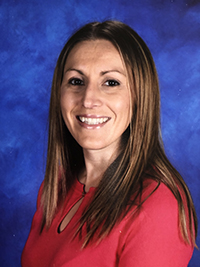

About Me
My name is Connie Pope. I am a Web Developer with a background in Graphic Design. I have a Certificate in Full-Stack Web Development from the University of Pennsylvania Penn LPS Boot Camp and an Associate Degree in Graphic Design Management from Bradford School in Pittsburgh.
My technical skills include HTML5, CSS3, Javascript, jQuery, Firebase, Node.js, MySQL, Sequelize, Express, Handlebars, MongoDB, React.js, Adobe Photoshop, Illustrator, InDesign, and WordPress. I have experience with mobile responsiveness, AJAX, APIs, Bootstrap, Visual Studio Code, and Github. In addition, I have strengths in collaborating as a team, communication, management, and customer service.
I have worked as a Web Developer, Freelance Web Designer, a Digital and Design Specialist, a Production Artist, and a Computer Specialist. My clients have included schools, colleges, sports teams, bands, catering companies, printing companies, small businesses, magazine publishers, retail stores, health care providers, restaurants, and many more.
In my free time I like to travel, volunteer, camp, kayak, ski, scuba dive and try new things.